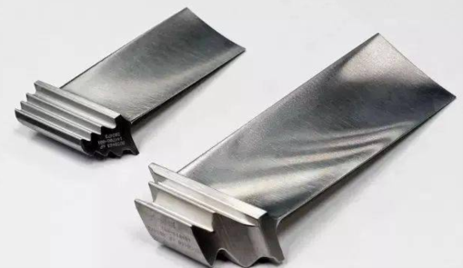
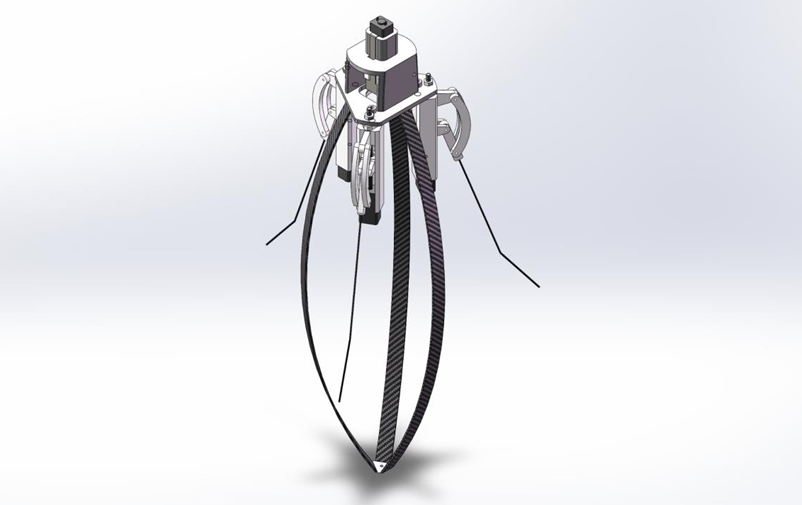

Natural Vibration Analysis for Aeroengine Blade with uncertain fastening
Department of Engineering Mechanics, SJTU
[report]
2022.02–12
- Analyzed the natural vibration behavior of aero-engine blades with uncertain fastening;
- Developed Matlab code using the Rayleigh-Ritz method and finite element analysis separately for simulation;

A self-righting jumping robot with angle adjustment via flexible rods
Design and Manufacturing Course Project, SJTU
[report]
[website]
2022.10–12
- Developed a self-righting jumping robot using flexible rods, reproducing this paper;
- Designed the robot's mechanical structure, making quasi-static analysis and experimental validation;